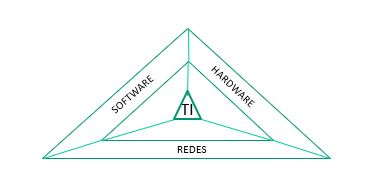
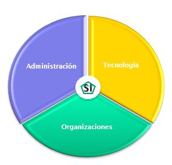

Conjunto o combinación de equipos electrónicos programados para capturar, almacenar, transformar y procesar una serie de valores, hechos o cifras y resumirlos y explotarlos para realizar análisis simples y complejos de acuerdo con las directrices o lineamientos definidos previamente con el fin de producir la información o el conocimiento y distribuirlos, compartirlos y disponerlos al talento humano mediante conexiones, dispositivos y canales de comunicación para apoyar las actividades de toma de decisiones y gestión y hacerle más fácil la vida a los usuarios.
| 1 | SUPERVIVENCIA |
|---|---|
| 2 | EXCELENCIA OPERACIONAL |
| 3 | NUEVOS SERVICIOS, PRODUCTOS Y MODELOS DE NEGOCIO |
| 4 | COMPETITIVIDAD |
| 5 | BUENAS RELACIONES CON CLIENTES |
| 6 | TOMA DE DECISIONES MEJORADA |
| 1 | PLANIFICACIÓN |
|---|---|
| 2 | OPERACIÓN |
| 3 | SEGUIMIENTO Y CONTROL |
| 4 | HACER LA VIDA MÁS FÁCIL A LOS USUARIOS |
Conjunto de nodos enlazados que permiten compartir recursos fisicos, logicos y transmitir informacion por diferentes canales y dispositivos desde un origen hasta su destino
Conformado por los usuarios, tecnicos, especialistas y por cualquier otra persona que fuera de la organizacion se relaciona de alguna manera con el sistema de informacion
-Metodos
-Procedimientos
-Reglas
Son las pautas, directrices, métodos y procedimientos que soportan o sustentan la operacion y el establecimiento de los sistemas de informacion
4- TECNOLOGIAS DE INFORMACION(TI):
Todas las tecnologías de hardware, software y redes soportadas por la microelectrónica y relacionadas con la extracción, almacenamiento, transformación, protección, procesamiento y transmisión de los datos y/o la información.

- Administración: implica liderazgo, estrategia y comportamiento administrativo
- Tecnología: consta de hardware, software, administración de datos, conectividad de redes y telecomunicaciones (internet).
- Organización: abarca la jerarquía, especialidades funcionales, procesos de negocio, cultura, normas y valores entre otros
RAZON DE LOS SISTEMAS DE INFORMACION:
- La informacion se convierte en el activo mas preciado de la organizacion
- El entorno exige una respuesta mas rapida en la toma de decisiones
- Las organizaciones crecieron y por ende sus niveles administrativos
El objetivo de los “nuevos” sistemas de información, es poner a disposición de los gerentes en todos los niveles de la organización, información clave, en el sitio correcto, en el momento oportuno, con la calidad indispensable y con el costo adecuado, para cumplir con los objetivos del negocio, ser competitivos y potenciar nuevos productos, servicios y modelos de negocio.